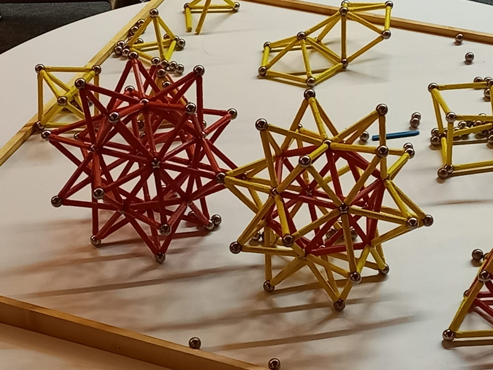
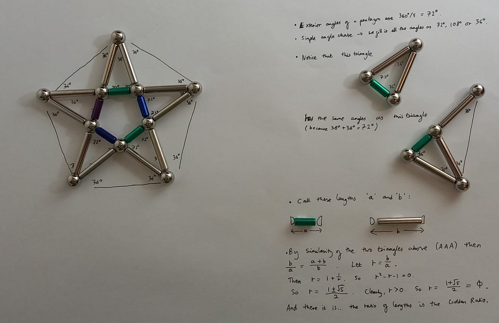

I am a huge enthusiast for — to avoid using any brand names here — `magnetic sticks and balls'. I always liked these while I was growing up. Then, when I was studying Topology in 2nd year maths, I saw Simplicial Complexes for the first time and I was instantly reminded of the toy. So I bought myself a small set for my desk. And a matching set for my sister (a fellow topology enthusiast). Then I wasn't satisfied with making only half a stellated icosahedron, so I extended the collection further...
One of the best things about my recent visit to the Mathematische Forschunginstitute Oberwolfach, was that there were enough magnets to build two huge conjoined stellated icosahedra.
My PhD supervisor Niloy has further fuelled my addiction by allowing me to purchase a 668-piece set on eBay, "for the lab". I want to build as many of the Archimedean Solids as possible. The ones with octagons and decagons pose a structural challenge.
At one point, I thought I might have exhausted the list of geometrically interesting models I could actually make with the miniature desktop set. Then I was idly modifying my stellated icosahedron (possibly my favourite shape to make) and to my surprise I found that I had made... a regular dodecahedron? Sure, I know that the regular dodecahedron is the dual of an icosahedron, but I could not see any particular reason why the points of the icosahedron's `stellation' spikes should be separated by exactly the length of one magnet.
After one very distracted day when I kept playing with this on my desk instead of doing my actual research, I realised that this construction of a dodecahedron from a stellated icosahedron is only possible because certain sets of edges form pentagrams (that are flat/ lie in a plane). And this is only possible because the ratio between the lengths of the two brands of `stick' is more or less exactly* the Golden Ratio, \(\phi = \frac{1+ \sqrt{5}}{2}\)!**
So I will call the base shape, a `Serendipitous Stellated Icosahedron'.
*More or less exactly is not a strictly mathematical caveat, unlike similar phrases such as almost everywhere. I just mean that it's close enough to make the model so that it a) looks good if you don't look too close, and b) doesn't fall apart.
**The exclamation mark indicates excitement and surprise; it does not represent anything to do with factorials or gamma functions.
Apologies if you associate pentagrams with witchcraft or something, and you don't like that. Here is a proof that the ratio of the lengths in question must be \(\phi\).
